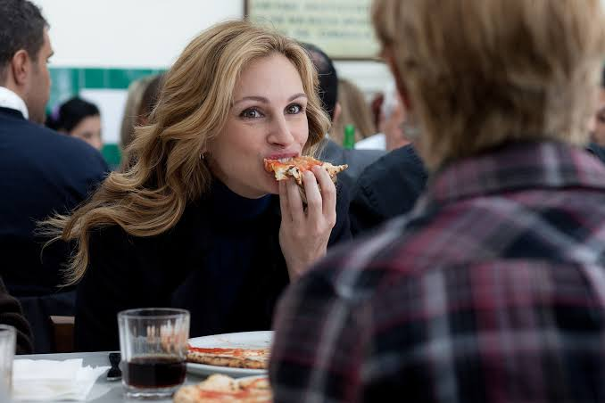
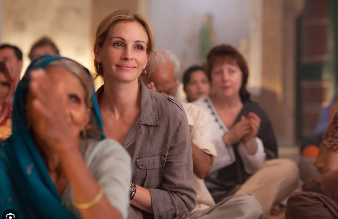
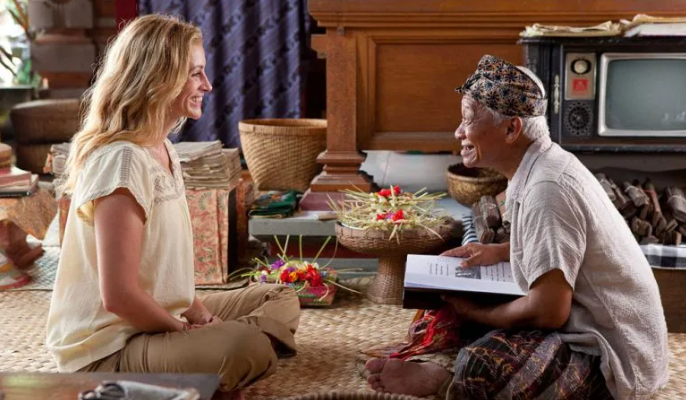
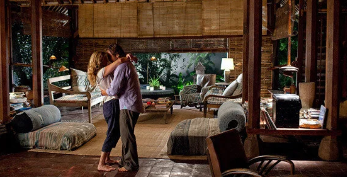

Inspired by Elizabeth Gilbert's memoir. One year, three countries, three lessons in being human — pleasure in Rome, silence in an Indian ashram, and balance on the island of Bali.
Warm-up · 3 minutes · about the author + the journey
Elizabeth Gilbert is an American writer. In 2006 she published a book called Eat, Pray, Love — a personal story about her divorce, her sadness, and her decision to travel for a whole year. She went to three countries — one for each part of the title.
Before you press play — read three quick questions on the right of your notebook. First watch is for gist, second watch is for details.
Click your answer · explanation appears after
Tap to flip · ▶ to hear the pronunciation
Which country appears in each scene from the trailer?
Joanna narrator · 30 seconds · use as a warm-up before reading section 01
Today we read three short passages — one from each country — listen to them, and pick up 18 useful travel and life-words. Ready? Let's begin in Rome.
Reading + listening + 6 vocabulary cards + 3 comprehension questions

I arrived in Rome in the middle of a rainy October. My apartment was small — one window, one bed, one blue kettle. But when I opened the window the city was there: wet, golden, alive. I knew I had been right to come.
My Italian teacher back in New York had given me a phrase before I left. "One phrase," she said, "and you will already understand my country." She wrote it down: il dolce far niente. The sweetness of doing nothing. In Rome, doing nothing is not laziness. It is an art.
For a whole week I watched how Romans practised that art. They sat in cafés for two hours over one small espresso. They talked, they watched people cross the piazza, they laughed and grew quiet again — and no one hurried them. They simply existed, and existing was enough.
On my third day I found a small trattoria near Piazza Navona. The waiter smiled when I sat down, and smiled again when I could not choose between the pastas. When my plate finally arrived I ate slowly, one bite at a time, trying to savour every taste. The waiter passed by, looked at me and said in gentle English: take your time.
I understood then. I had forgotten what pleasure felt like — not the loud, expensive kind, but the quiet, ordinary kind that lives in one plate of pasta and one afternoon of rain.
5 statements. Read the passage above · click ✓ True or ✗ False · explanation appears after.
Tap a card to flip · ▶ to hear the word
Tap a word from the bank, then tap the gap. Green = correct · red = try again.
Tap 🎙, say the phrase out loud. The browser will listen · Chrome only · needs mic permission.
Click the correct answer · explanation appears after
Reading + listening + 6 vocabulary cards + 3 comprehension questions

After Italy came India. If Rome had asked me to eat, this country asked me to be quiet. I flew from a place of tables and pasta to a place of temples and dust, and I did not know if I was ready.
I chose an ashram in a small village. Meditation began at four in the morning. Two hundred people sat cross-legged in a stone hall, in the dark, in silence. Only breathing — and one bell, once every hour.
The first week was war. My knees hurt. My back ached. My mind screamed. I made lists of everything I hated about the food, about the heat, about the people I had left behind. I wanted to run out of the hall and never come back.
Then the teacher said one thing that changed the week for me. "Do not fight your thoughts. Watch them like clouds. Let them pass." So I stopped fighting. I began to notice my breath instead of my thoughts, and I began to understand what discipline really means — not a hard rule, but a soft return, again and again, to what matters.
On the seventh day, something quiet happened. A small silence — not empty, but full. Like the moment after a bell has finished ringing. It was the first quiet minute of my adult life, and I finally understood what people mean by faith: not certainty, but the courage to keep returning.
5 statements. Read the passage · click ✓ True or ✗ False · explanation appears after.
Tap a card to flip · ▶ to hear the word
Tap a word from the bank, then tap the gap. Green = correct · red = try again.
Tap 🎙, say the phrase out loud. Chrome only · needs mic permission.
Click the correct answer · explanation appears after
Reading + listening + 6 vocabulary cards + 3 comprehension questions

Bali was different. Italy had taught me pleasure. India had taught me silence. Bali asked me to bring both into one life — to eat and to sit still, to talk and to listen, to belong somewhere without losing myself.
I met an old medicine man in a small village near Ubud. His name was Ketut. He was small, wrinkled, and had one tooth that appeared when he smiled — and he smiled often. On my first visit he took my hand, looked at my face and said something in his own language. His helper translated softly: "He says you have the mouth of one who laughs and the eyes of one who has been sad. He can help."
Every afternoon for two months I climbed the two steps up to his porch. He would draw pictures for me — pictures of the mind, of the heart, of the body. His favourite drawing was simple: a person with four legs and a smiling face, standing on a small green earth. "Four legs so you cannot fall," he said. "A smile because the earth is round and you belong on it."
To find balance, he told me, you must keep your feet on the ground and your heart open. Not too much thinking. Not too much feeling. Just watch, and smile. He said the village was my family now, and every neighbour a small teacher, and the rice terraces a slow prayer. He was teaching me community without using the word.
I began to belong there — not to a place, exactly, but to a way of standing in the world. Two legs for the head, two for the heart. A face that remembered how to smile. And a piece of wisdom small enough to fold and carry in a pocket: the earth is round, and you belong on it.
5 statements. Read the passage · click ✓ True or ✗ False · explanation appears after.
Tap a card to flip · ▶ to hear the word
Click the correct answer · explanation appears after
Tap a word from the bank, then tap the gap. Green = correct · red = try again.
Tap 🎙, say the phrase out loud. Chrome only · needs mic permission.

All three countries in one grid · tap to flip · ▶ to hear · builder auto-highlights them in the reading text above
You've met 18 new words — 6 in Rome, 6 at the ashram, 6 on Bali. The vocabulary section that appears automatically at the top of the page is your central deck — click any word in the reading text to add it. Everyone can add — teacher and student alike.
Answer aloud in full sentences · use «I would rather…», «For me…», «I think…» · minimum 2 sentences per answer
Green = correct, red = try again · your progress saves automatically
Which country taught which lesson? Click the matching pair — country + lesson.
Click the words in the right order. Two Would-you-rather patterns.
First — five open questions for our talk (3-5 sentences each, use at least one vocab item from any of the three countries). Then — eight True / False statements to check the plot of Elizabeth Gilbert's journey.